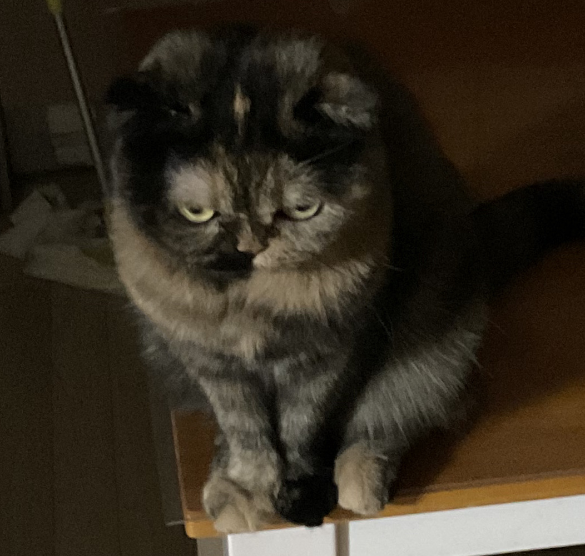

Siru is my cat and a female who is estimated to be four years old this year. She has three colors of fur and it has an irregular pattern. She is usually smaller than a cat and weighs about 3 kilograms. Her appearance is cute and ugly.
She only sleeps every day. He is still sleeping behind me. Maybe after two more hours of sleep, she'll cry for food.